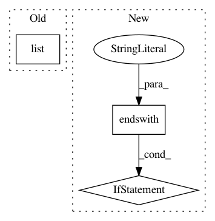

0cd42478586c9cb1febb6b76eea068aac8869a1e,sacred/ingredient.py,Ingredient,__init__,#Ingredient#Any#Any#Any#Any#,38
Before Change
self.config_hooks = []
self.configurations = []
self.named_configs = dict()
self.ingredients = list(ingredients)
self.logger = None
self.captured_functions = []
self.post_run_hooks = []
self.pre_run_hooks = []
After Change
Decorator to turn a function into a captured function.
The missing arguments of captured functions are automatically filled
from the configuration if possible.
See :ref:`captured_functions` for more information.
If a ``prefix`` is specified, the search for suitable
entries is performed in the corresponding subtree of the configuration.
if function in self.captured_functions:
return function
In pattern: SUPERPATTERN
Frequency: 3
Non-data size: 3
Instances
Project Name: IDSIA/sacred
Commit Name: 0cd42478586c9cb1febb6b76eea068aac8869a1e
Time: 2018-01-24
Author: dismaldenizen@gmail.com
File Name: sacred/ingredient.py
Class Name: Ingredient
Method Name: __init__
Project Name: deeptools/HiCExplorer
Commit Name: cad628ca4fc790e4e310a662392aa13beded04f4
Time: 2017-09-05
Author: wolffj@informatik.uni-freiburg.de
File Name: hicexplorer/hicPlotMatrix.py
Class Name:
Method Name: main
Project Name: allenai/allennlp
Commit Name: 0459261c388bec72937e0268c4316b85279d0bac
Time: 2018-09-24
Author: kl2806@columbia.edu
File Name: allennlp/semparse/contexts/sql_table_context.py
Class Name: SqlTableContext
Method Name: initialize_grammar_str